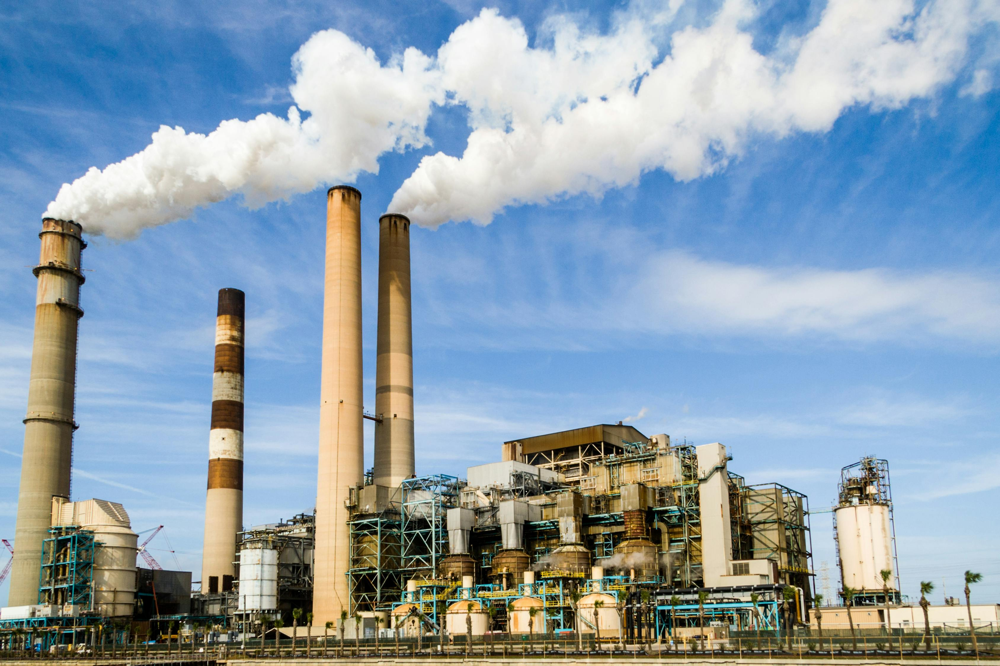
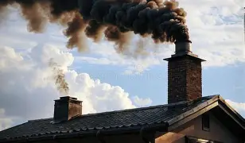
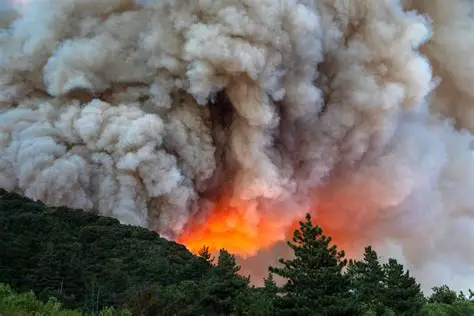

From industrial giants to our own backyards, here is the data.

Manufacturing plants, chemical refineries, and power stations burn massive quantities of fossil fuels like coal and oil. This intense combustion process releases toxic gases such as carbon dioxide and sulfur dioxide into the atmosphere, which are the primary drivers of acid rain, localized winter smog, and global climate change.
Gases exhausted from millions of cars, diesel trucks, shipping vessels, and airplanes are the leading source of urban air degradation. Internal combustion engines release carbon monoxide and fine particulate matter (PM2.5). These microscopic particles bypass the body's natural filters, penetrating deep into human lung tissue and entering the bloodstream.
Livestock farming and chemical fertilizers are massive but often overlooked sources of air pollution. Industrial cattle farming produces high volumes of methane, a potent greenhouse gas. Additionally, ammonia evaporated from animal waste and fertilizers reacts with urban traffic emissions in the air to create dense, widespread smog blankets miles away from the farms.

Daily household habits collectively impact global air quality. Burning wood, charcoal, or biomass for residential cooking and heating releases heavy soot and particulate matter into neighborhoods. Furthermore, the routine use of synthetic household cleaning agents, paint thinners, and aerosol sprays releases Volatile Organic Compounds (VOCs) that degrade indoor air quality.

Not all air pollution is generated by human technology. Severe natural events like volcanic eruptions and massive forest wildfires release catastrophic volumes of smoke, ash, and carbon gases into the troposphere. Additionally, high-velocity windstorms blowing across arid desert regions sweep up millions of tons of fine dust particles, carrying them across oceans and dropping air quality thousands of miles away.
Air pollution isn't just about what we see (smoke). It is categorized into two types:
According to the WHO, 9 out of 10 people breathe air containing high levels of pollutants, leading to 7 million deaths anuually...